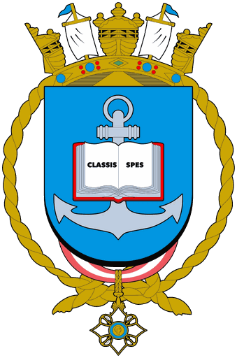
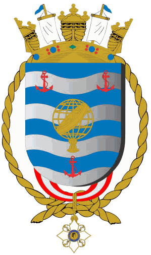
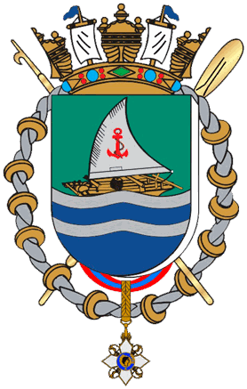
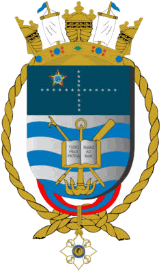
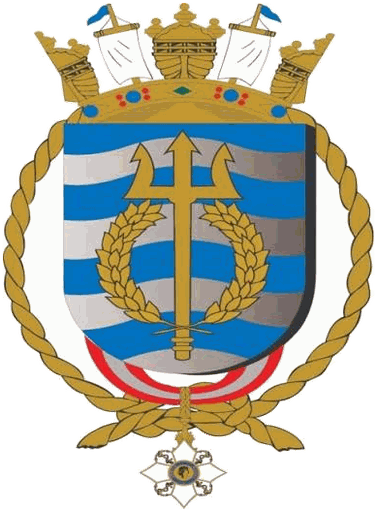
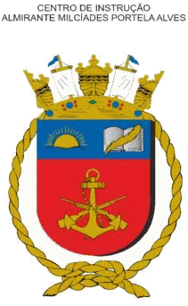
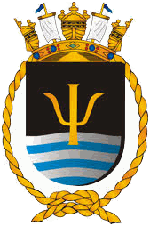

DEnsM
Diretoria de Ensino da Marinha
Escolas, centros, cursos e notícias do ensino da Marinha Brasileira.

Instituições subordinadas

CNColégio Naval
Preparação naval
Abrir site →
ENEscola Naval
Formação de oficiais
Abrir site →
EAMEscolas de Aprendizes-Marinheiros
Formação de praças
Abrir site →
CIAACentro de Instrução Almirante Alexandrino
Instrução de praças
Abrir site →
CIAWCentro de Instrução Almirante Wandenkolk
Instrução naval
Abrir site →
CIAMPACentro de Instrução Almirante Milcíades Portela Alves
Formação de Fuzileiros Navais
Abrir site →CIASCCentro de Instrução Almirante Sylvio de Camargo
Aperfeiçoamento de Fuzileiros Navais
Abrir site →EGNEscola de Guerra Naval
Altos estudos navais
Abrir site →
SSPMServiço de Seleção do Pessoal da Marinha
Ingresso e seleções
Abrir site →Noticiário
Sem notícia.